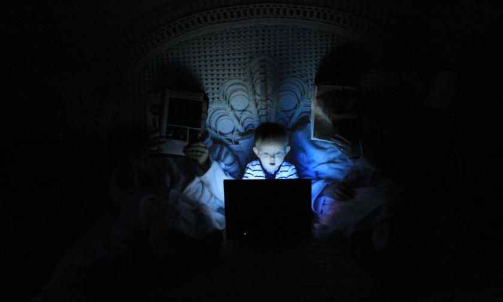
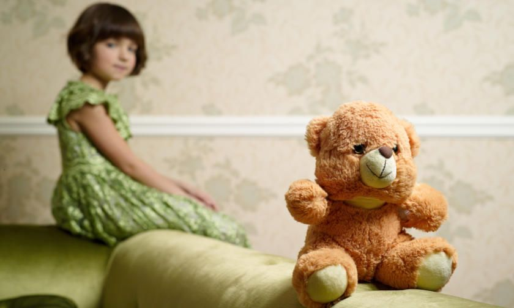

30 years ago, many children would stay outside all day, playing and exploring, only to return when it was time for their dinner. The world we now live in is very different to the world back then. Studies have shown that since 2015, that one in nine children haven’t visited woodlands, parks, and beaches, and this is down to a number of factors. In this article we are going to investigate these factors and their impact towards play. 
Factors Hindering Child’s Play
Traffic
The rise of traffic is due to population growth, and this is a worry for families, as it stops children independently going outside close to roads playing.
Stranger Danger
Since the 70s and 80s, the stranger danger campaign has been instilled into young children to make them more aware of abductions. A report by Dougal Shaw, BBC reporter, questions whether the campaign shouldn’t be used in our present society.
A report published in 2016 about child abduction showed the true figure of how many children were taken, and it showed that stranger attempted abductions were a minority over England, Wales, and Northern Ireland.
Electronics
Technology (mobile phones, games consoles, cable/satellite TV) has become a dependency for most people. Children have developed addictions to a lot of these above technologies, which creates an issue for families, when trying to get them off their electronics to experience the outdoors.
Social Media
The media changes our expectations to fear the outside world, but it is up to parents to teach our children that it is important to ask questions, and for parents to put their mind to rest if things worry them. Research does show that children today have poorer emotional health thanks to new media .
Lack of Time
D’vera Cohn, former senior editor for Population Reference Bureau (PRB) explains in her article about whether parents spend enough time with their children that parents do have enough time, which goes against the grain of popular belief.
The common thread through this is: Are parents too scared to let their children play outside the home?
Why is Play Important for Children’s Development?
It is unfortunate that we live in times that the above factors are real, and do exist. Free play for children is very important, as it lets children interact and engage with the world around them.
The American Academy of Paediatrics wrote a study about the importance of child’s development . It explained in detail how child care experts can offer advice to ensure that play is protected in a child’s family life, school day and their local communities.
By allowing children to lead their own play, and have the ability to work at their own pace, this will help them to develop their own choices, therefore finding out exactly what they are interested in. This helps their social and emotional well-being, develop creative leadership, and can work within a group. Unstructured play leads children to increase activity physically, which would help obesity.
This article addresses a variety of factors that have reduced play, including a hurried lifestyle, changes in family structure, and increased attention to academics and enrichment activities at the expense of recess or free child-centred play. However, schools now have added pressure to incorporate play into their curriculum.
Using Play to Help Children in School
Schools have resources available to facilitate children to go outside to play, discover and learn. Ways they do this include:
Play-Based Learning
Play for children is a good way for them to communicate with their peer groups, and a way for them to express ideas, conclusions and views.
It is essential that children are encouraged to play. This gives the child a better understanding of themselves and their peers. It also helps them reflect on themselves and interpret their feelings so that they can better understand how they feel. This in turn helps show them that they can cope with their awareness of uncertainty and gives them a better outlook when relating to others.
Children sometimes have to rely on alternative methods to communicate other than oral methods, and use drawing, body language and music to do this.
This process could be all happening at once, which would include:
- Adult directive approach (i.e. teacher shows pupil how to)
- Practising their skills in a child friendly environment (reduced adult input)
- Child initiated play (e.g. using those skills to help develop imaginative play within the school environment)
Play Therapy
Children may require access to this resource at school, as it will help draw out traumatic experiences and provide them with the coping mechanisms to assist them through life.
There are a variety of reasons why children require play therapy, below are a few indicators that maybe a need:
- Children may require access to play therapy because they are not getting that experience in their everyday life.
- Children may access play therapy as a way of dealing with trauma or traumatic experiences e.g. if you are trying to get children to talk about a situation/experience you may get more information from the children during a play based situation rather than a one to one talk.
- Children will display their experiences during play and act out what they have seen e.g. if they are touching a doll inappropriately, then this may indicate that the child had experienced something negativity.
For more information, please refer to this: Play Therapy
Play can be used as a resource to help aid children to heal from trauma in their lives, this can be a supporting mechanism in their development. Teachers have the shared vision and all understand the importance of play. In support of this, the use to playtime is fundamental and should not be discouraged. 
Importance of Playtime
A study by Anthony Pellegrini has expressed that there is a debate about playtime being a waste of time, yet there are no studies to back up this thought, and that there are many studies explaining the importance of playtime within schools.
Imaginative play allows children to role-play and act out real life situations with their peers. This will prepare them for adolescence and adulthood where they will have to encounter these situations and make mature decisions.
By practitioners observing children during free play , this allows for personalities and friendships to be analysed. The importance of having adults in the close vicinity as a role model also facilitates play if certain pupils struggle to start play. This is important as it allows children to apply their knowledge learnt from their home life and school. This then showcases their learnt experience inside and outside the classroom. Ofsted speak about a balance between play and learning. If they are fused together with good planning opportunities, they should work well together and will allow for a balance of structure and natural learning within the school environment.
Issues that Schools are Facing
Funding within schools is a big issue. With the increased responsibilities of what staff are expected to do with minimal funding is not supporting children to the best of their ability. For example, some schools either have to cut hours or make redundancies to ensure that they are not in a deficit.
Research has supported how minimal funding has had detrimental effects on school performance. However, there are a lack of studies, which explore the impact of this funding crisis on the child’s ability to play. Due to this, schools prioritise core resources (English, maths, and science) over play equipment. This goes against Early Years documentation where learning is through play.
Another issue schools face is the expansion of school buildings, which limits their green spaces. Schools are now facing issues with their own green space, due to an increase in pupil numbers and more complexity in additional needs.
It is believed that head teachers are under pressure, to take on additional pupils even though they do not have the capacity to do so. Governors and local authorities want to inject as much funding as possible whilst there is land available. If this keeps happening schools with be heavily reliant on external natural environments, which may incur a cost. This is where leaders have to think creatively and efficiently on how they use their funding on play with positive long term impact.
Future of Play
In December 2008, Play England introduced a play strategy , which covered a ten-year span. This has not been renewed due to a change in the vision of the government. However, in 2018, Scotland had recognised that play was still a priority and had taken an active step by agreeing to a national commitment. Inspiring Scotland has written an outdoor play-based learning coalition position statement based upon the UN Convention of the rights of the child. It highlights how article 31 is fundamental to the development of the child and should always be a priority.
For more information: A summary of the UN Convention on the Rights of the Child
Despite our society changing and the introduction of modern families, we still need to consider the importance of play to contribute to a child’s development. Play allows experiential learning to occur and enables them to consider a range of scenarios. Organisations need to work with each other in order to have an agreed vision and shared values about the importance of play in the United Kingdom.